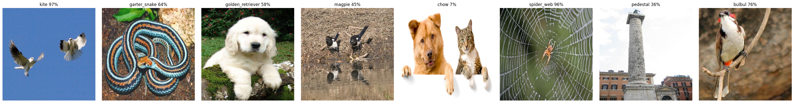

<!DOCTYPE html>
<html lang="en" >
<head>
    <meta charset="utf-8">
    <meta name="generator" content="Docutils 0.19: https://docutils.sourceforge.io/" />

    <meta name="viewport" content="width=device-width, initial-scale=1">

    
    <title>Explaining Model’s Predictions</title>
    

    <link rel="stylesheet" href="_static/css/redactor.css" type="text/css" />
    
    <link rel="stylesheet" href="_static/pygments.css" type="text/css" />
    
    <link rel="stylesheet" href="_static/css/redactor.css" type="text/css" />
    
    <link rel="stylesheet" href="_static/jupyter-sphinx.css" type="text/css" />
    
    <link rel="stylesheet" href="_static/thebelab.css" type="text/css" />
    
    <link rel="stylesheet" href="_static/css/custom.css" type="text/css" />
    
    
    <link rel="index" title="Index" href="genindex.html"/>
    <link rel="search" title="Search" href="search.html"/>
    <link rel="top" title="Keras Explainable" href="index.html"/>
    <link rel="next" title="Exposing Intermediate Signals" href="exposure.html"/>
    <link rel="prev" title="keras Explainable" href="readme.html"/> 
</head>

<body role="document">
     

    
<a href="#" id="js-navigation-toggle" class="navigation-toggle">
    <i class="mdi mdi-menu"></i><i class="mdi mdi-close"></i>
</a>

<section class="site-sidebar">

<nav>


    <a href="index.html" class="branding-link">
    
        keras-explainable
    
    
    
        
        
            <span class="branding-link__version">
                0.0.2
            </span>
        
    
    </a>

    
<section role="search">
    <form action="search.html" method="get" class="site-searchform">
        <input type="text" name="q" placeholder="Search docs" />
        <input type="hidden" name="check_keywords" value="yes" />
        <input type="hidden" name="area" value="default" />
      </form>
</section>


    <section class="site-nav">
    
    
        <ul class="current">
<li class="toctree-l1"><a class="reference internal" href="readme.html">Overview</a></li>
<li class="toctree-l1 current"><a class="current reference internal" href="#">Explaining</a></li>
<li class="toctree-l1"><a class="reference internal" href="exposure.html">Exposure</a></li>
<li class="toctree-l1"><a class="reference internal" href="methods/index.html">Methods</a></li>
<li class="toctree-l1"><a class="reference internal" href="wsol.html">WSSL &amp; WSSS</a></li>
<li class="toctree-l1"><a class="reference internal" href="contributing.html">Contributions &amp; Help</a></li>
<li class="toctree-l1"><a class="reference internal" href="license.html">License</a></li>
<li class="toctree-l1"><a class="reference internal" href="authors.html">Authors</a></li>
<li class="toctree-l1"><a class="reference internal" href="changelog.html">Changelog</a></li>
<li class="toctree-l1"><a class="reference internal" href="api/modules.html">Module Reference</a></li>
</ul>

    
    </section>

</nav>

</section>

    <main class="site-main" role="main">
        


<nav class="site-breadcrumbs">
    <ul>
    
        <li>
            <a href="index.html">Docs</a> /
        </li>
        
        <li class="site-breadcrumbs__leaf">Explaining Model’s Predictions</li>
    
    </ul>
</nav>
        <section class="site-content">
            <div class="container">
                
  <section id="explaining-model-s-predictions">
<h1>Explaining Model’s Predictions<a class="headerlink" href="#explaining-model-s-predictions" title="Permalink to this heading">¶</a></h1>
<p>This library has the function <a class="reference internal" href="api/keras_explainable.html#keras_explainable.explain" title="keras_explainable.explain"><code class="xref py py-func docutils literal notranslate"><span class="pre">explain()</span></code></a> as core
component, which is used to execute any AI explaining method and technique.
Think of it as the <code class="xref py py-meth docutils literal notranslate"><span class="pre">keras.Model.fit()</span></code> or <code class="xref py py-meth docutils literal notranslate"><span class="pre">keras.Model.predict()</span></code>
loops of Keras’ models, in which the execution graph of the operations
contained in a model is compiled (conditioned to <code class="xref py py-attr docutils literal notranslate"><span class="pre">Model.run_eagerly</span></code>
and <code class="xref py py-attr docutils literal notranslate"><span class="pre">Model.jit_compile</span></code>) and the explaining maps are computed
according to the method’s strategy.</p>
<p>Just like in <code class="xref py py-meth docutils literal notranslate"><span class="pre">keras.model.predict()</span></code>, <a class="reference internal" href="api/keras_explainable.html#keras_explainable.explain" title="keras_explainable.explain"><code class="xref py py-func docutils literal notranslate"><span class="pre">explain()</span></code></a>
allows various types of input data and retrieves the Model’s associated
distribute strategy in order to distribute the workload across multiple
GPUs and/or workers.</p>
<div class="jupyter_cell docutils container">
<div class="cell_output docutils container">
</div>
</div>
<p>We demonstrate bellow how predictions can be explained using the
Xception network trained over ImageNet, using a few image samples.
Firstly, we load the network:</p>
<div class="jupyter_cell jupyter_container docutils container">
<div class="cell_input code_cell docutils container">
<div class="highlight-ipython3 notranslate"><div class="highlight"><pre><span></span><span class="n">model</span> <span class="o">=</span> <span class="n">tf</span><span class="o">.</span><span class="n">keras</span><span class="o">.</span><span class="n">applications</span><span class="o">.</span><span class="n">Xception</span><span class="p">(</span>
  <span class="n">classifier_activation</span><span class="o">=</span><span class="kc">None</span><span class="p">,</span>
  <span class="n">weights</span><span class="o">=</span><span class="s1">&#39;imagenet&#39;</span><span class="p">,</span>
<span class="p">)</span>

<span class="nb">print</span><span class="p">(</span><span class="sa">f</span><span class="s2">&quot;Spatial map sizes: </span><span class="si">{</span><span class="n">model</span><span class="o">.</span><span class="n">get_layer</span><span class="p">(</span><span class="s1">&#39;avg_pool&#39;</span><span class="p">)</span><span class="o">.</span><span class="n">input</span><span class="o">.</span><span class="n">shape</span><span class="si">}</span><span class="s2">&quot;</span><span class="p">)</span>
</pre></div>
</div>
</div>
<div class="cell_output docutils container">
<div class="output stream highlight-none notranslate"><div class="highlight"><pre><span></span>Downloading data from https://storage.googleapis.com/tensorflow/keras-applications/xception/xception_weights_tf_dim_ordering_tf_kernels.h5
</pre></div>
</div>
<div class="output stream highlight-none notranslate"><div class="highlight"><pre><span></span>
    8192/91884032 [..............................] - ETA: 0s
</pre></div>
</div>
<div class="output stream highlight-none notranslate"><div class="highlight"><pre><span></span>
   57344/91884032 [..............................] - ETA: 1:22
</pre></div>
</div>
<div class="output stream highlight-none notranslate"><div class="highlight"><pre><span></span>
  221184/91884032 [..............................] - ETA: 42s 
</pre></div>
</div>
<div class="output stream highlight-none notranslate"><div class="highlight"><pre><span></span>
  819200/91884032 [..............................] - ETA: 16s
</pre></div>
</div>
<div class="output stream highlight-none notranslate"><div class="highlight"><pre><span></span>
 3203072/91884032 [&gt;.............................] - ETA: 5s 
</pre></div>
</div>
<div class="output stream highlight-none notranslate"><div class="highlight"><pre><span></span>
 8396800/91884032 [=&gt;............................] - ETA: 2s
</pre></div>
</div>
<div class="output stream highlight-none notranslate"><div class="highlight"><pre><span></span>
11788288/91884032 [==&gt;...........................] - ETA: 2s
</pre></div>
</div>
<div class="output stream highlight-none notranslate"><div class="highlight"><pre><span></span>
16769024/91884032 [====&gt;.........................] - ETA: 1s
</pre></div>
</div>
<div class="output stream highlight-none notranslate"><div class="highlight"><pre><span></span>
22061056/91884032 [======&gt;.......................] - ETA: 1s
</pre></div>
</div>
<div class="output stream highlight-none notranslate"><div class="highlight"><pre><span></span>
27549696/91884032 [=======&gt;......................] - ETA: 1s
</pre></div>
</div>
<div class="output stream highlight-none notranslate"><div class="highlight"><pre><span></span>
33464320/91884032 [=========&gt;....................] - ETA: 0s
</pre></div>
</div>
<div class="output stream highlight-none notranslate"><div class="highlight"><pre><span></span>
39378944/91884032 [===========&gt;..................] - ETA: 0s
</pre></div>
</div>
<div class="output stream highlight-none notranslate"><div class="highlight"><pre><span></span>
45424640/91884032 [=============&gt;................] - ETA: 0s
</pre></div>
</div>
<div class="output stream highlight-none notranslate"><div class="highlight"><pre><span></span>
51519488/91884032 [===============&gt;..............] - ETA: 0s
</pre></div>
</div>
<div class="output stream highlight-none notranslate"><div class="highlight"><pre><span></span>
57450496/91884032 [=================&gt;............] - ETA: 0s
</pre></div>
</div>
<div class="output stream highlight-none notranslate"><div class="highlight"><pre><span></span>
63627264/91884032 [===================&gt;..........] - ETA: 0s
</pre></div>
</div>
<div class="output stream highlight-none notranslate"><div class="highlight"><pre><span></span>
69804032/91884032 [=====================&gt;........] - ETA: 0s
</pre></div>
</div>
<div class="output stream highlight-none notranslate"><div class="highlight"><pre><span></span>
75964416/91884032 [=======================&gt;......] - ETA: 0s
</pre></div>
</div>
<div class="output stream highlight-none notranslate"><div class="highlight"><pre><span></span>
82141184/91884032 [=========================&gt;....] - ETA: 0s
</pre></div>
</div>
<div class="output stream highlight-none notranslate"><div class="highlight"><pre><span></span>
87990272/91884032 [===========================&gt;..] - ETA: 0s
</pre></div>
</div>
<div class="output stream highlight-none notranslate"><div class="highlight"><pre><span></span>
91884032/91884032 [==============================] - 1s 0us/step
</pre></div>
</div>
<div class="output stream highlight-none notranslate"><div class="highlight"><pre><span></span>Spatial map sizes: (None, 10, 10, 2048)
</pre></div>
</div>
</div>
</div>
<p>We can feed-forward the samples once and get the predicted classes for each sample.
Besides making sure the model is outputting the expected classes, this step is
required in order to determine the most activating units in the <em>logits</em> layer,
which improves performance of the explaining methods.</p>
<div class="jupyter_cell jupyter_container docutils container">
<div class="cell_input code_cell docutils container">
<div class="highlight-ipython3 notranslate"><div class="highlight"><pre><span></span><span class="kn">from</span> <span class="nn">tensorflow.keras.applications.imagenet_utils</span> <span class="kn">import</span> <span class="n">preprocess_input</span><span class="p">,</span> <span class="n">decode_predictions</span>

<span class="n">inputs</span> <span class="o">=</span> <span class="n">images</span> <span class="o">/</span> <span class="mf">127.5</span> <span class="o">-</span> <span class="mi">1</span>
<span class="n">logits</span> <span class="o">=</span> <span class="n">model</span><span class="o">.</span><span class="n">predict</span><span class="p">(</span><span class="n">inputs</span><span class="p">,</span> <span class="n">verbose</span><span class="o">=</span><span class="mi">0</span><span class="p">)</span>

<span class="n">indices</span> <span class="o">=</span> <span class="n">np</span><span class="o">.</span><span class="n">argsort</span><span class="p">(</span><span class="n">logits</span><span class="p">,</span> <span class="n">axis</span><span class="o">=-</span><span class="mi">1</span><span class="p">)[:,</span> <span class="p">::</span><span class="o">-</span><span class="mi">1</span><span class="p">]</span>
<span class="n">probs</span> <span class="o">=</span> <span class="n">tf</span><span class="o">.</span><span class="n">nn</span><span class="o">.</span><span class="n">softmax</span><span class="p">(</span><span class="n">logits</span><span class="p">)</span><span class="o">.</span><span class="n">numpy</span><span class="p">()</span>
<span class="n">predictions</span> <span class="o">=</span> <span class="n">decode_predictions</span><span class="p">(</span><span class="n">probs</span><span class="p">,</span> <span class="n">top</span><span class="o">=</span><span class="mi">1</span><span class="p">)</span>

<span class="n">ke</span><span class="o">.</span><span class="n">utils</span><span class="o">.</span><span class="n">visualize</span><span class="p">(</span>
  <span class="n">images</span><span class="o">=</span><span class="n">images</span><span class="p">,</span>
  <span class="n">titles</span><span class="o">=</span><span class="p">[</span>
    <span class="s2">&quot;, &quot;</span><span class="o">.</span><span class="n">join</span><span class="p">(</span><span class="sa">f</span><span class="s2">&quot;</span><span class="si">{</span><span class="n">klass</span><span class="si">}</span><span class="s2"> </span><span class="si">{</span><span class="n">prob</span><span class="si">:</span><span class="s2">.0%</span><span class="si">}</span><span class="s2">&quot;</span> <span class="k">for</span> <span class="n">code</span><span class="p">,</span> <span class="n">klass</span><span class="p">,</span> <span class="n">prob</span> <span class="ow">in</span> <span class="n">p</span><span class="p">)</span>
    <span class="k">for</span> <span class="n">p</span> <span class="ow">in</span> <span class="n">predictions</span>
  <span class="p">]</span>
<span class="p">)</span>
</pre></div>
</div>
</div>
<div class="cell_output docutils container">
<div class="output stream highlight-none notranslate"><div class="highlight"><pre><span></span>Downloading data from https://storage.googleapis.com/download.tensorflow.org/data/imagenet_class_index.json
</pre></div>
</div>
<div class="output stream highlight-none notranslate"><div class="highlight"><pre><span></span>
 8192/35363 [=====&gt;........................] - ETA: 0s
</pre></div>
</div>
<div class="output stream highlight-none notranslate"><div class="highlight"><pre><span></span>
35363/35363 [==============================] - 0s 1us/step
</pre></div>
</div>

</div>
</div>
<p>Finally, we can simply run all available explaining methods:</p>
<div class="jupyter_cell jupyter_container docutils container">
<div class="cell_input code_cell docutils container">
<div class="highlight-ipython3 notranslate"><div class="highlight"><pre><span></span><span class="n">explaining_units</span> <span class="o">=</span> <span class="n">indices</span><span class="p">[:,</span> <span class="p">:</span><span class="mi">1</span><span class="p">]</span>  <span class="c1"># First most likely class.</span>

<span class="c1"># Gradient Back-propagation</span>
<span class="n">_</span><span class="p">,</span> <span class="n">g_maps</span> <span class="o">=</span> <span class="n">ke</span><span class="o">.</span><span class="n">gradients</span><span class="p">(</span><span class="n">model</span><span class="p">,</span> <span class="n">inputs</span><span class="p">,</span> <span class="n">explaining_units</span><span class="p">)</span>

<span class="c1"># Full-Gradient</span>
<span class="n">logits</span> <span class="o">=</span> <span class="n">ke</span><span class="o">.</span><span class="n">inspection</span><span class="o">.</span><span class="n">get_logits_layer</span><span class="p">(</span><span class="n">model</span><span class="p">)</span>
<span class="n">inters</span><span class="p">,</span> <span class="n">biases</span> <span class="o">=</span> <span class="n">ke</span><span class="o">.</span><span class="n">inspection</span><span class="o">.</span><span class="n">layers_with_biases</span><span class="p">(</span><span class="n">model</span><span class="p">,</span> <span class="n">exclude</span><span class="o">=</span><span class="p">[</span><span class="n">logits</span><span class="p">])</span>
<span class="n">model_exp</span> <span class="o">=</span> <span class="n">ke</span><span class="o">.</span><span class="n">inspection</span><span class="o">.</span><span class="n">expose</span><span class="p">(</span><span class="n">model</span><span class="p">,</span> <span class="n">inters</span><span class="p">,</span> <span class="n">logits</span><span class="p">)</span>
<span class="n">_</span><span class="p">,</span> <span class="n">fg_maps</span> <span class="o">=</span> <span class="n">ke</span><span class="o">.</span><span class="n">full_gradients</span><span class="p">(</span><span class="n">model_exp</span><span class="p">,</span> <span class="n">inputs</span><span class="p">,</span> <span class="n">explaining_units</span><span class="p">,</span> <span class="n">biases</span><span class="o">=</span><span class="n">biases</span><span class="p">)</span>

<span class="c1"># CAM-Based</span>
<span class="n">model_exp</span> <span class="o">=</span> <span class="n">ke</span><span class="o">.</span><span class="n">inspection</span><span class="o">.</span><span class="n">expose</span><span class="p">(</span><span class="n">model</span><span class="p">)</span>
<span class="n">_</span><span class="p">,</span> <span class="n">c_maps</span> <span class="o">=</span> <span class="n">ke</span><span class="o">.</span><span class="n">cam</span><span class="p">(</span><span class="n">model_exp</span><span class="p">,</span> <span class="n">inputs</span><span class="p">,</span> <span class="n">explaining_units</span><span class="p">)</span>
<span class="n">_</span><span class="p">,</span> <span class="n">gc_maps</span> <span class="o">=</span> <span class="n">ke</span><span class="o">.</span><span class="n">gradcam</span><span class="p">(</span><span class="n">model_exp</span><span class="p">,</span> <span class="n">inputs</span><span class="p">,</span> <span class="n">explaining_units</span><span class="p">)</span>
<span class="n">_</span><span class="p">,</span> <span class="n">gcpp_maps</span> <span class="o">=</span> <span class="n">ke</span><span class="o">.</span><span class="n">gradcampp</span><span class="p">(</span><span class="n">model_exp</span><span class="p">,</span> <span class="n">inputs</span><span class="p">,</span> <span class="n">explaining_units</span><span class="p">)</span>
<span class="n">_</span><span class="p">,</span> <span class="n">sc_maps</span> <span class="o">=</span> <span class="n">ke</span><span class="o">.</span><span class="n">scorecam</span><span class="p">(</span><span class="n">model_exp</span><span class="p">,</span> <span class="n">inputs</span><span class="p">,</span> <span class="n">explaining_units</span><span class="p">)</span>
</pre></div>
</div>
</div>
<div class="cell_output docutils container">
</div>
</div>
<div class="jupyter_cell docutils container">
<div class="cell_output docutils container">

</div>
</div>
<p>The functions above are simply shortcuts for
<a class="reference internal" href="api/keras_explainable.engine.html#keras_explainable.engine.explaining.explain" title="keras_explainable.engine.explaining.explain"><code class="xref py py-func docutils literal notranslate"><span class="pre">explain()</span></code></a>, using their conventional
hyper-parameters and post processing functions.
For more flexibility, you can use the regular form:</p>
<div class="highlight-python notranslate"><div class="highlight"><pre><span></span><span class="n">logits</span><span class="p">,</span> <span class="n">cams</span> <span class="o">=</span> <span class="n">ke</span><span class="o">.</span><span class="n">explain</span><span class="p">(</span>
  <span class="n">ke</span><span class="o">.</span><span class="n">methods</span><span class="o">.</span><span class="n">cam</span><span class="o">.</span><span class="n">gradcam</span><span class="p">,</span>
  <span class="n">model_exp</span><span class="p">,</span>
  <span class="n">inputs</span><span class="p">,</span>
  <span class="n">explaining_units</span><span class="p">,</span>
  <span class="n">batch_size</span><span class="o">=</span><span class="mi">32</span><span class="p">,</span>
  <span class="n">postprocessing</span><span class="o">=</span><span class="n">ke</span><span class="o">.</span><span class="n">filters</span><span class="o">.</span><span class="n">positive_normalize</span><span class="p">,</span>
<span class="p">)</span>
</pre></div>
</div>
<p>While the <a class="reference internal" href="api/keras_explainable.engine.html#keras_explainable.engine.explaining.explain" title="keras_explainable.engine.explaining.explain"><code class="xref py py-func docutils literal notranslate"><span class="pre">explain()</span></code></a> function is a convenient
wrapper, transparently distributing the workload based on the distribution strategy
associated with the model, it is not a necessary component in the overall functioning
of the library. Alternatively, one can call any explaining method directly:</p>
<div class="highlight-python notranslate"><div class="highlight"><pre><span></span><span class="n">logits</span><span class="p">,</span> <span class="n">cams</span> <span class="o">=</span> <span class="n">ke</span><span class="o">.</span><span class="n">methods</span><span class="o">.</span><span class="n">cams</span><span class="o">.</span><span class="n">gradcam</span><span class="p">(</span><span class="n">model</span><span class="p">,</span> <span class="n">inputs</span><span class="p">,</span> <span class="n">explaining_units</span><span class="p">)</span>

<span class="c1"># Or the following, which is more efficient:</span>
<span class="n">gradcam</span> <span class="o">=</span> <span class="n">tf</span><span class="o">.</span><span class="n">function</span><span class="p">(</span><span class="n">ke</span><span class="o">.</span><span class="n">methods</span><span class="o">.</span><span class="n">cams</span><span class="o">.</span><span class="n">gradcam</span><span class="p">,</span> <span class="n">reduce_retracing</span><span class="o">=</span><span class="kc">True</span><span class="p">)</span>
<span class="n">logits</span><span class="p">,</span> <span class="n">cams</span> <span class="o">=</span> <span class="n">gradcam</span><span class="p">(</span><span class="n">model</span><span class="p">,</span> <span class="n">inputs</span><span class="p">,</span> <span class="n">explaining_units</span><span class="p">)</span>

<span class="n">cams</span> <span class="o">=</span> <span class="n">ke</span><span class="o">.</span><span class="n">filters</span><span class="o">.</span><span class="n">positive_normalize</span><span class="p">(</span><span class="n">cams</span><span class="p">)</span>
<span class="n">cams</span> <span class="o">=</span> <span class="n">tf</span><span class="o">.</span><span class="n">image</span><span class="o">.</span><span class="n">resize</span><span class="p">(</span><span class="n">cams</span><span class="p">,</span> <span class="p">(</span><span class="mi">299</span><span class="p">,</span> <span class="mi">299</span><span class="p">))</span><span class="o">.</span><span class="n">numpy</span><span class="p">()</span>
</pre></div>
</div>
</section>


            </div>

        </section>

        
            <nav class="site-bottom-navigation" role="navigation">
            
                <a href="exposure.html" class="btn btn--primary btn--next right"
                    title="Exposing Intermediate Signals" accesskey="n">
                    Next
                </a>
            
            
                <a href="readme.html" class="btn btn--primary btn--prev"
                    title="keras Explainable" accesskey="p">
                    Previous
                </a>
            
            </nav>
        

        
            <div class="source-link">
            
                
                    <a href="_sources/explaining.rst.txt" rel="nofollow">
                        <i class="mdi mdi-code-tags"></i>
                        View page source
                    </a>
                
            
            </div>
        


    </main>

    <footer class="site-footer">
<div class="container">

    <div role="contentinfo">
        <p>
                &copy; Copyright 2022, Lucas David.
        </p>
    </div> 

</div>
</footer>

    

    <script type="text/javascript">
        var DOCUMENTATION_OPTIONS = {
            URL_ROOT:'',
            VERSION:'0.0.2',
            COLLAPSE_INDEX:false,
            FILE_SUFFIX:'.html',
            HAS_SOURCE:  true
        };
    </script>
    <script type="text/javascript" src="_static/documentation_options.js"></script>
    <script type="text/javascript" src="_static/jquery.js"></script>
    <script type="text/javascript" src="_static/underscore.js"></script>
    <script type="text/javascript" src="_static/_sphinx_javascript_frameworks_compat.js"></script>
    <script type="text/javascript" src="_static/doctools.js"></script>
    <script type="text/javascript" src="_static/sphinx_highlight.js"></script>
    <script type="text/javascript" src="_static/thebelab-helper.js"></script>
    <script type="text/javascript" src="https://cdnjs.cloudflare.com/ajax/libs/require.js/2.3.4/require.min.js"></script>
    <script type="text/javascript" src="https://cdn.jsdelivr.net/npm/@jupyter-widgets/html-manager@^1.0.1/dist/embed-amd.js"></script>
    <script type="text/javascript" src="_static/js/theme-min.js"></script> 
</body>
</html>